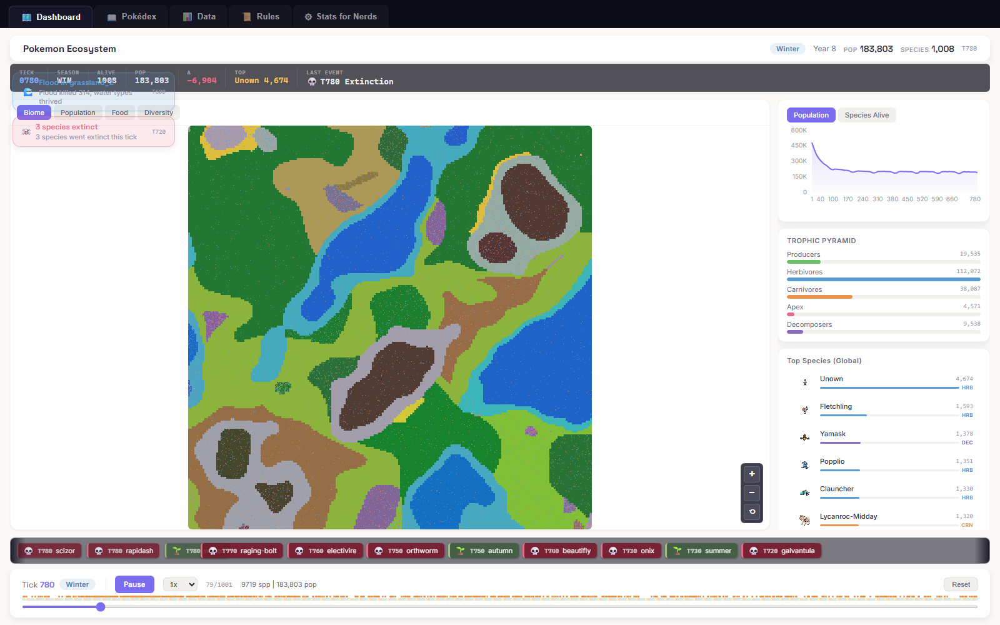

A while back I got curious what would happen if you placed every Pokémon species into one world and just let them live. This is the result: all 1,025 species dropped into a procedurally generated map of biomes, with each species’ ecological traits (diet, metabolism, speed, reproduction) derived from its actual in-game stats rather than hand-assigned.
Nothing about the outcome is scripted. Each creature simply follows its traits, and the whole ecosystem falls out of those simple rules on its own: food chains form, populations boom and crash, dominant predators sometimes eat through their own food supply and collapse, and seasons and natural disasters keep shaking things up. You can run the whole thing live in the browser.
Live demo →